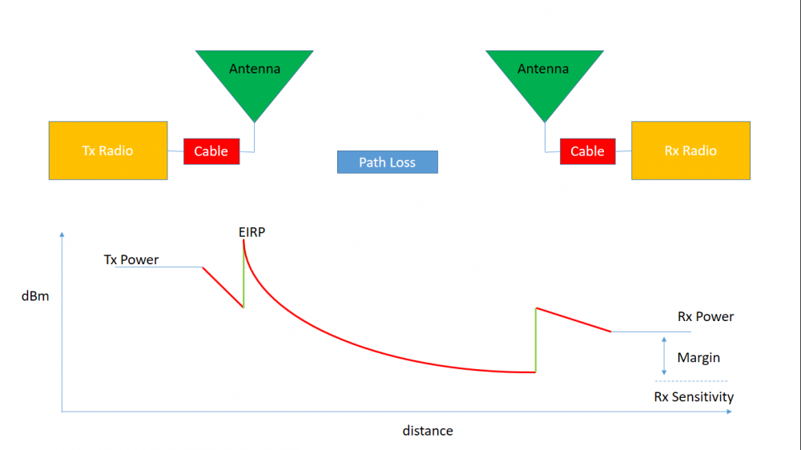

A link budget is an accounting of all of the power gains and losses that a communication signal experiences in a telecommunication system; from a transmitter, through a medium to the receiver.
A link budget is a design aid, calculated during the design of a communication system to determine the received power and to ensure that the information is received with an adequate SNR (Signal-to-Noise Ratio). It enables us to calculate how far we can go with our equipment as it helps to estimate worst-case scenario. Specifications of every component such as minimum gain of amplifier is directly or indirectly derived from link budget.
Link budget can be summarised in one equation: Received Power = Transmitted Power + Gains - Losses
 The aim of link budget is to maximise the margin shown in the above figure.Some important terms in a link budget are -
Line Parameters
Amplifier Gains- Amplifiers are connected to add gain or increase the signal power based on our link budget. Generally, a HPA (High Power Amplifier) is connected on the transmitter side and an LNA (Low Noise Amplifier) is connected on the receiver side
Cable and connector loss- These correspond to the cables and connectors used in our transmitter and receiver systems.
Noise Temperature- It is the temperature of a resistor that has noise power equal to that of the device. It is generally used for calculation of signal to noise power density on receiver side in Link Budget.
Antenna Parameters
Antenna Gains- Every type of antenna adds a gain to the signal based on the type and directivity of the antenna.
Antenna Mismatch Loss- This is the amount of power that will not be available on the output due to impedance mismatches and signal reflections.
Antenna Polarisation Loss- Antenna polarisation is an important factor when designing antennas. This loss arises due to different forms of polarisation of receiving and transmitting antenna.
Antenna Pointing Loss- It is the loss suffered in signal strength due to misalignment of the antenna. As you would know while tracking a satellite with a handheld antenna, we rotate the antenna as the satellite passes over. This is to minimize this loss.
Propagation Loss
Path Loss- As the signal travels, the region in which it exists also spreads. Thus the power density diminishes. This is accounted for in path loss. It is dependent on the distance travelled and wavelength of signal.
Ionospheric Loss- It arises due to interaction of our signal with ions since our signal is an electromagnetic signal.
Atmospheric Loss- It is caused due to signal absorption by gases.
Performance Parameters
In digital modulation modes, we receive bits and in analog mode, we receive continuous signals. Due to different modulations, there are different threshold parameters that define the performance of a communication link.
Eb/No- Energy per bit to Noise density is the performance parameter for digital mode.
Eb/No threshold- For every digital modulation mode, a threshold is defined at a desired bit error rate below which bits are not detected correctly.
SNR- Signal to Noise Ratio is the performance paramter for analog mode.
Receiver sensitivity- It is the threshold value of input analog signal power below which the receiver can no longer differentiate between the signal and the noise so it considers the signal also as noise floor.
Link Margin- is calculated as (estimated value - threshold value) at the receiver's end. The more the margin, the better is your communication link design.